Field and travel photos
Geology has taken me all over the world! I have been fortunate enough to travel widely over the course of my education, from the Ecuadorian Andes to the Scottish Highlands. Below are a few field photos from my travels.
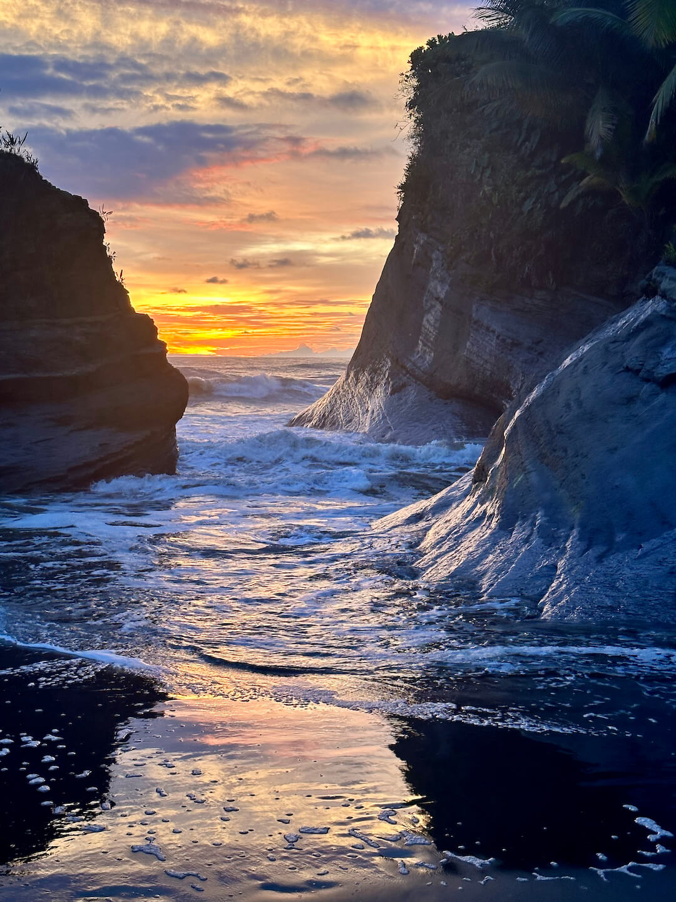
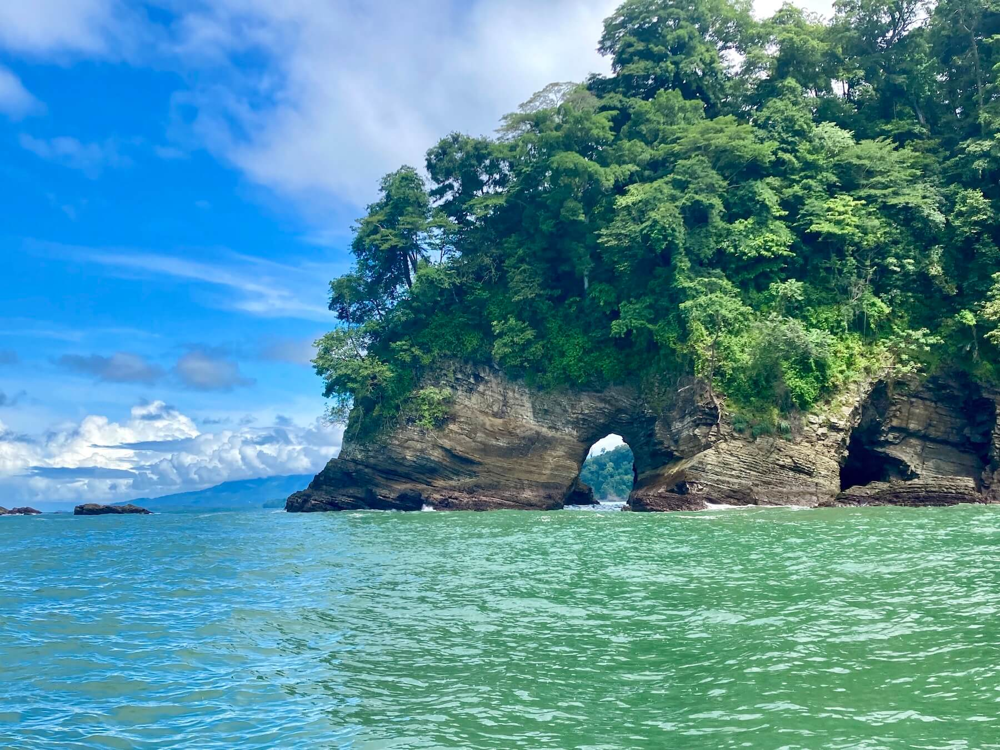

 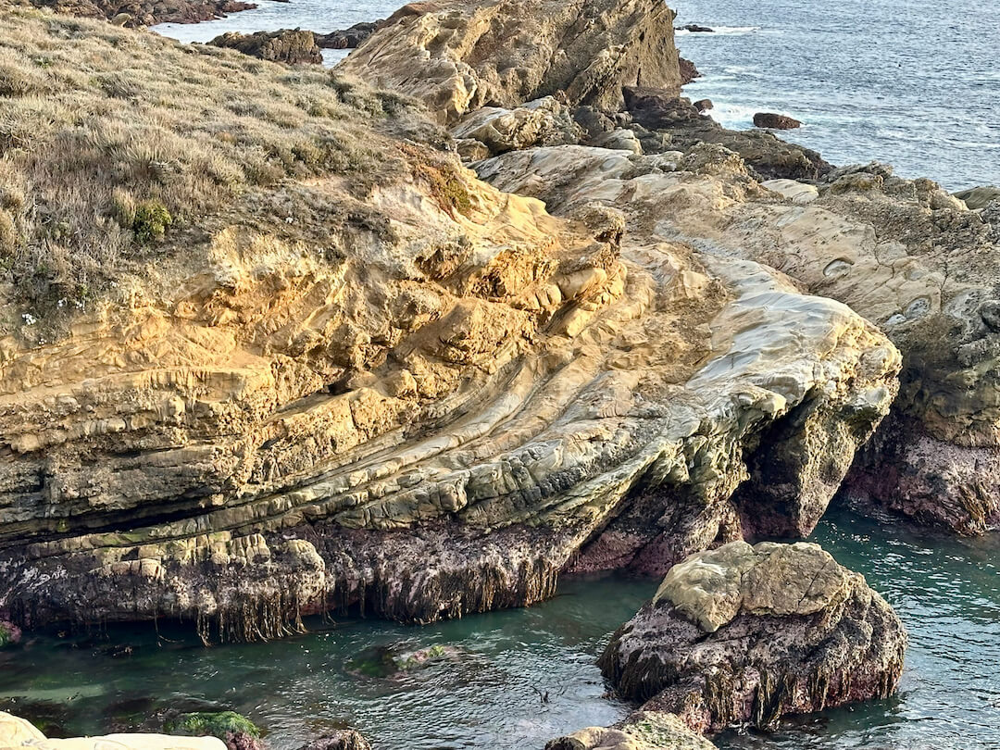
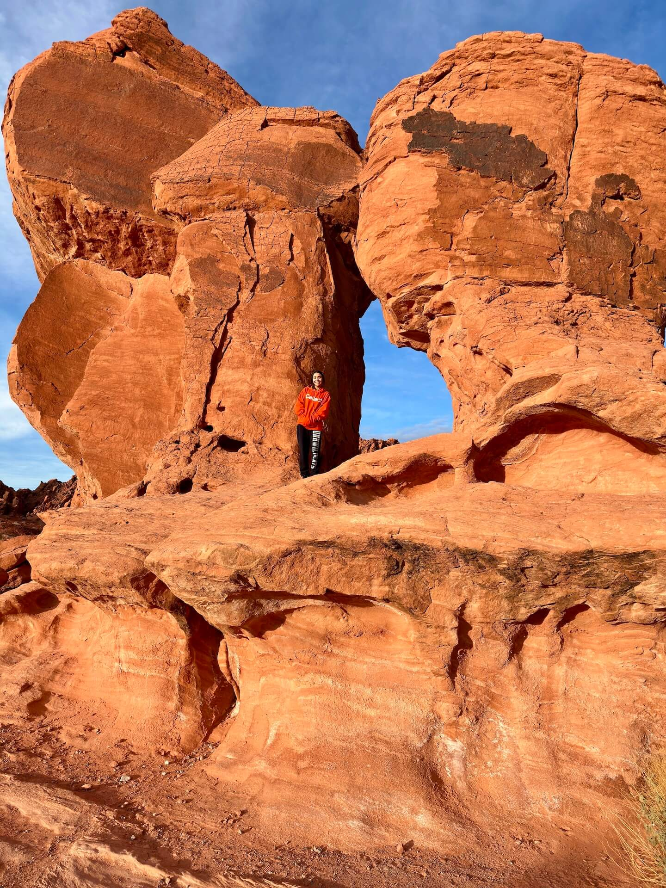
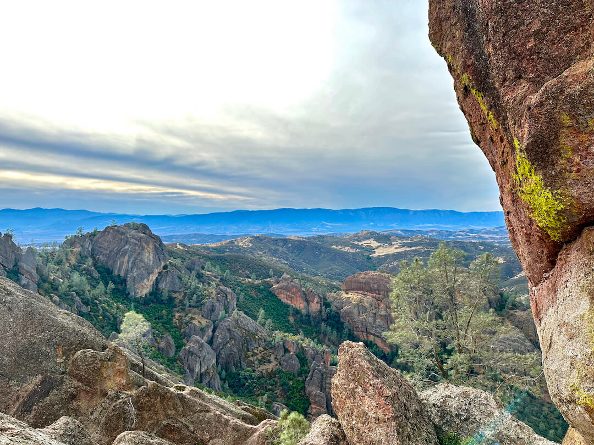
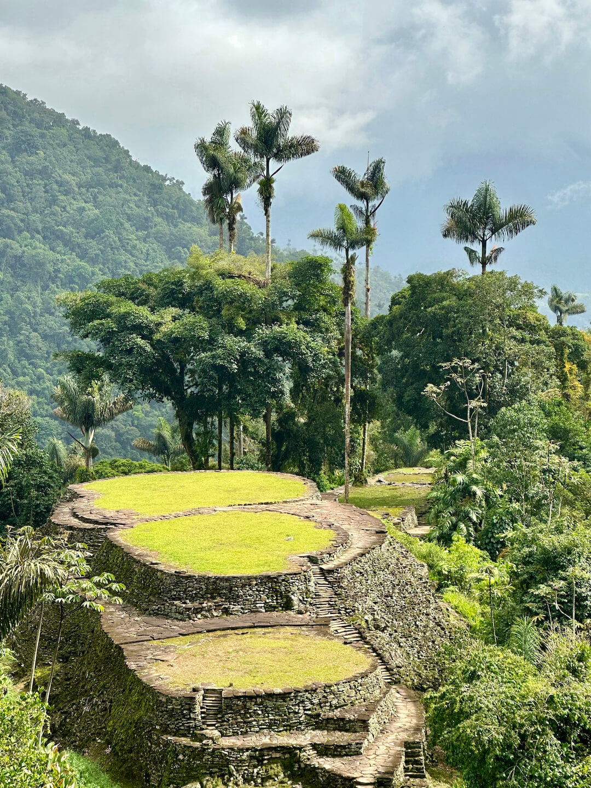
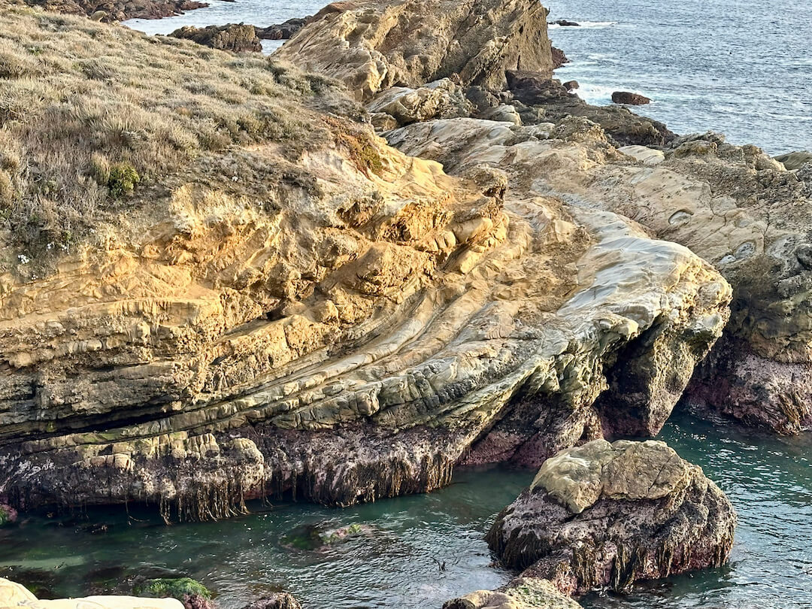
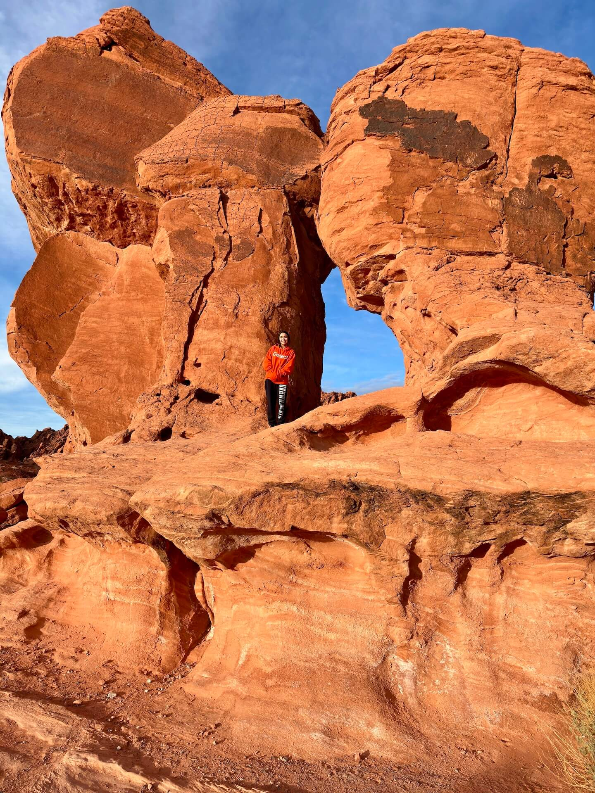
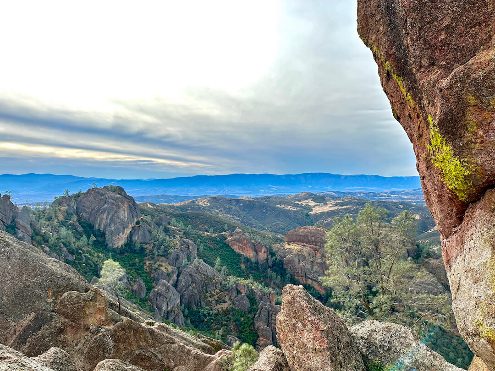
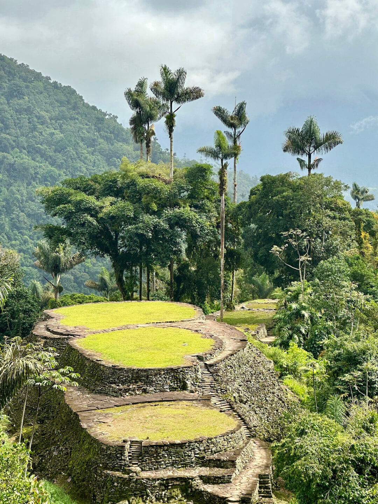


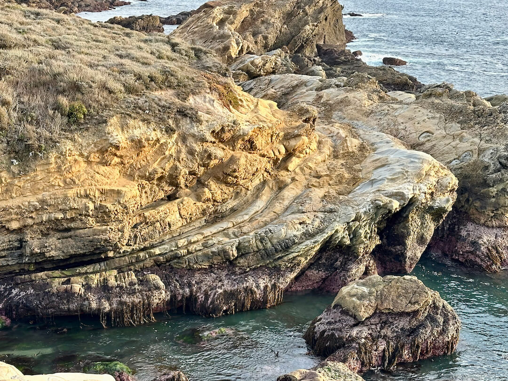
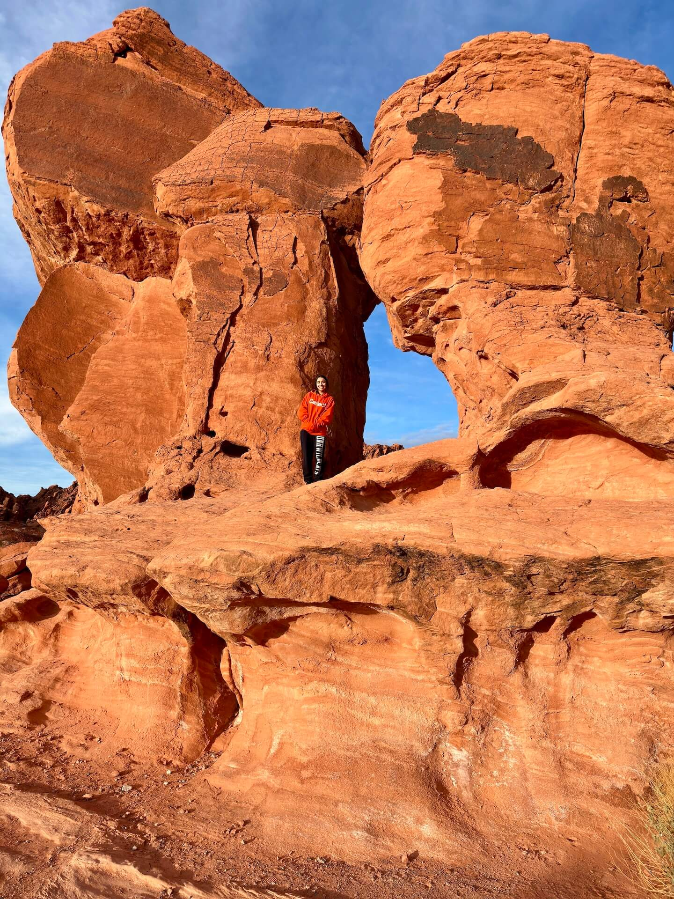
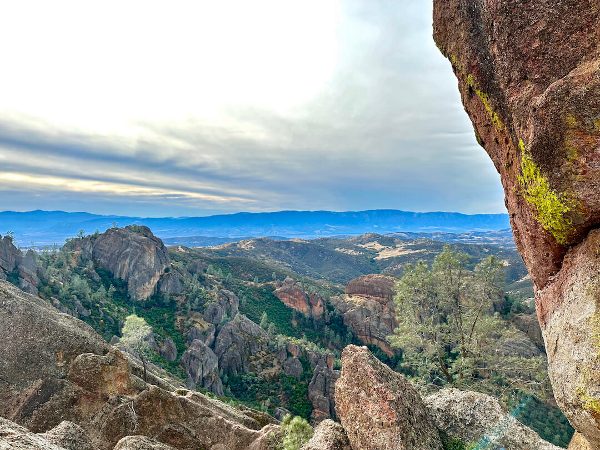
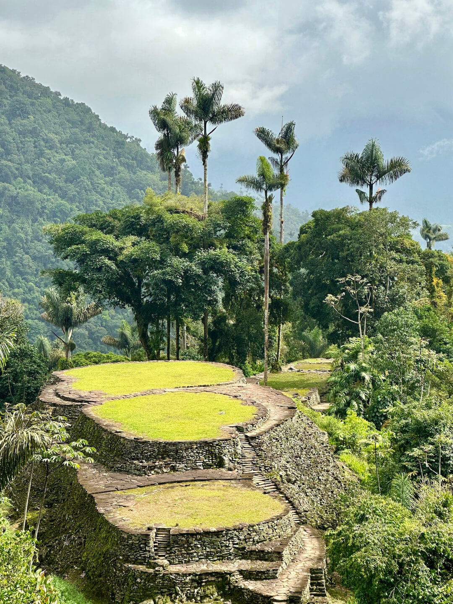
Contact
Please feel free to get in touch with the form below or by emailing me at sosa45nh@gmail.com